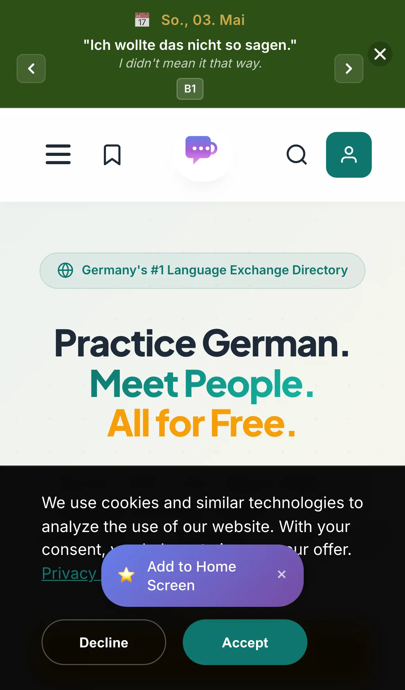

Sprachcafe.com
Product · Growth · Engineering
- Problem
- Free language-practice meetups in Germany are scattered across Meetup, Facebook groups, WhatsApp chats, and local pages — impossible to search in one place.
- Role
- Founder — product, engineering, SEO, growth.
- System
- A directory platform indexing free language-exchange meetups by city across Germany, built for organic search discovery.
- Stack
- Astro, SEO-first architecture, structured data
- Result
- 600+ registered users, live production product.
- Status
- Production

sprachcafes.com ↗